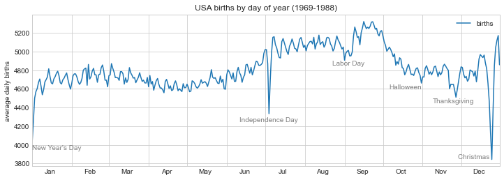
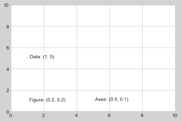
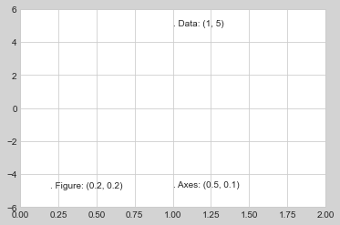
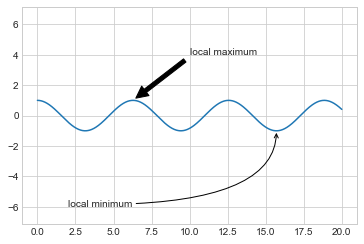
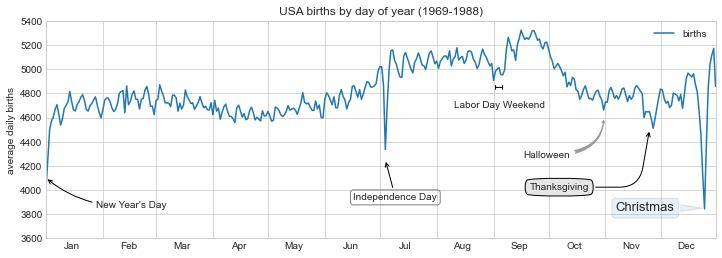

%matplotlib inline
import matplotlib.pyplot as plt
import matplotlib as mpl
plt.style.use('seaborn-whitegrid')
import numpy as np
import pandas as pd텍스트 및 주석
좋은 시각화를 만들려면 그림이 이야기를 전달하도록 독자를 안내하는 것이 포함됩니다. 어떤 경우에는 이 이야기를 추가 텍스트 없이 완전히 시각적인 방식으로 전달할 수 있지만, 다른 경우에는 작은 텍스트 단서와 레이블이 필요합니다. 아마도 사용하게 될 가장 기본적인 유형의 주석은 축 레이블과 제목일 것입니다. 그러나 옵션은 이보다 더 뛰어납니다. 일부 데이터를 살펴보고 흥미로운 정보를 전달하는 데 도움이 되도록 데이터를 시각화하고 주석을 추가하는 방법을 살펴보겠습니다. 우리가 사용할 함수를 플로팅하고 가져오기 위해 노트북을 설정하는 것부터 시작하겠습니다.
예: 휴일이 미국 출생에 미치는 영향
앞서 예: 출생률 데이터에서 작업한 일부 데이터로 돌아가서 1년 동안 평균 출생률 도표를 생성했습니다. 여기서 사용한 것과 동일한 청소 절차로 시작하여 결과를 플롯합니다(다음 그림 참조).
# shell command to download the data:
# !cd data && curl -O \
# https://raw.githubusercontent.com/jakevdp/data-CDCbirths/master/births.csvfrom datetime import datetime
births = pd.read_csv('data/births.csv')
quartiles = np.percentile(births['births'], [25, 50, 75])
mu, sig = quartiles[1], 0.74 * (quartiles[2] - quartiles[0])
births = births.query('(births > @mu - 5 * @sig) & (births < @mu + 5 * @sig)')
births['day'] = births['day'].astype(int)
births.index = pd.to_datetime(10000 * births.year +
100 * births.month +
births.day, format='%Y%m%d')
births_by_date = births.pivot_table('births',
[births.index.month, births.index.day])
births_by_date.index = [datetime(2012, month, day)
for (month, day) in births_by_date.index]fig, ax = plt.subplots(figsize=(12, 4))
births_by_date.plot(ax=ax);
이와 같이 데이터를 시각화할 때 독자의 관심을 끌기 위해 플롯의 특정 기능에 주석을 추가하는 것이 유용한 경우가 많습니다. 이는 특정 x/y 값에 텍스트를 배치하는 plt.text/ax.text 함수를 사용하여 수동으로 수행할 수 있습니다(다음 그림 참조):
fig, ax = plt.subplots(figsize=(12, 4))
births_by_date.plot(ax=ax)
# Add labels to the plot
style = dict(size=10, color='gray')
ax.text('2012-1-1', 3950, "New Year's Day", **style)
ax.text('2012-7-4', 4250, "Independence Day", ha='center', **style)
ax.text('2012-9-4', 4850, "Labor Day", ha='center', **style)
ax.text('2012-10-31', 4600, "Halloween", ha='right', **style)
ax.text('2012-11-25', 4450, "Thanksgiving", ha='center', **style)
ax.text('2012-12-25', 3850, "Christmas ", ha='right', **style)
# Label the axes
ax.set(title='USA births by day of year (1969-1988)',
ylabel='average daily births')
# Format the x-axis with centered month labels
ax.xaxis.set_major_locator(mpl.dates.MonthLocator())
ax.xaxis.set_minor_locator(mpl.dates.MonthLocator(bymonthday=15))
ax.xaxis.set_major_formatter(plt.NullFormatter())
ax.xaxis.set_minor_formatter(mpl.dates.DateFormatter('%h'));
ax.text 메소드는 x 위치, y 위치, 문자열을 사용하고 텍스트의 색상, 크기, 스타일, 정렬 및 기타 속성을 지정하는 선택적 키워드를 사용합니다. 여기서는 ha='right' 및 ha='center'를 사용했습니다. 여기서 ha는 수평 정렬의 약자입니다. 사용 가능한 옵션에 대한 자세한 내용은 plt.text 및 mpl.text.Text의 독스트링을 참조하세요.
변환 및 텍스트 위치
이전 예에서는 텍스트 주석을 데이터 위치에 고정했습니다. 데이터와 관계없이 축이나 그림의 고정 위치에 텍스트를 고정하는 것이 더 나은 경우도 있습니다. Matplotlib에서는 transform을 수정하여 이 작업을 수행합니다.
Matplotlib는 몇 가지 다른 좌표계를 사용합니다. \((x, y) = (1, 1)\)의 데이터 포인트는 축이나 그림의 특정 위치에 해당하고 이는 화면의 특정 픽셀에 해당합니다. 수학적으로 이러한 좌표계 간의 변환은 상대적으로 간단하며 Matplotlib에는 이러한 변환을 수행하기 위해 내부적으로 사용하는 잘 개발된 도구 세트가 있습니다(이러한 도구는 matplotlib.transforms 하위 모듈에서 탐색할 수 있습니다).
일반 사용자는 변환의 세부 사항에 대해 걱정할 필요가 거의 없지만 그림의 텍스트 배치를 고려할 때 알고 있으면 유용한 지식입니다. 이 상황에 유용할 수 있는 사전 정의된 세 가지 변환이 있습니다.
ax.transData: 데이터 좌표와 관련된 변환ax.transAxes: 축과 관련된 변환(축 크기 단위)fig.transFigure: 그림과 관련된 변환(그림 크기 단위)
이러한 변환을 사용하여 다양한 위치에 텍스트를 그리는 예를 살펴보겠습니다(다음 그림 참조).
fig, ax = plt.subplots(facecolor='lightgray')
ax.axis([0, 10, 0, 10])
# transform=ax.transData is the default, but we'll specify it anyway
ax.text(1, 5, ". Data: (1, 5)", transform=ax.transData)
ax.text(0.5, 0.1, ". Axes: (0.5, 0.1)", transform=ax.transAxes)
ax.text(0.2, 0.2, ". Figure: (0.2, 0.2)", transform=fig.transFigure);
Matplotlib의 기본 텍스트 정렬은 “.” 각 문자열의 시작 부분에 지정된 좌표 위치가 대략적으로 표시됩니다.
transData 좌표는 x축 및 y축 라벨과 관련된 일반적인 데이터 좌표를 제공합니다. transAxes 좌표는 축의 왼쪽 하단 모서리(여기서는 흰색 상자)로부터의 위치를 전체 축 크기의 일부로 제공합니다. transFigure 좌표는 비슷하지만 그림의 왼쪽 하단 모서리(여기서는 회색 상자)의 위치를 전체 그림 크기의 일부로 지정합니다.
이제 축 제한을 변경하면 transData 좌표만 영향을 받고 다른 좌표는 고정된 상태로 유지됩니다(다음 그림 참조).
ax.set_xlim(0, 2)
ax.set_ylim(-6, 6)
fig
이 동작은 축 제한을 대화형으로 변경하면 더 명확하게 살펴볼 수 있습니다. 노트북에서 이 코드를 실행하는 경우 ‘%matplotlib inline’을’%matplotlib Notebook’으로 변경하고 각 플롯의 메뉴를 사용하여 플롯과 상호 작용하면 이를 수행할 수 있습니다.
화살표 및 주석
눈금 및 텍스트와 함께 또 다른 유용한 주석 표시는 간단한 화살표입니다.
plt.arrow 기능을 사용할 수 있지만 사용을 권장하지는 않습니다. 이 기능이 생성하는 화살표는 플롯의 다양한 종횡비에 영향을 받는 SVG 개체이므로 올바르게 가져오기가 까다롭습니다. 대신, 일부 텍스트와 화살표를 생성하고 화살표를 매우 유연하게 지정할 수 있는 ‘plt.annotate’ 함수를 사용하는 것이 좋습니다.
다음은 몇 가지 옵션이 포함된 annotate의 데모입니다(다음 그림 참조).
fig, ax = plt.subplots()
x = np.linspace(0, 20, 1000)
ax.plot(x, np.cos(x))
ax.axis('equal')
ax.annotate('local maximum', xy=(6.28, 1), xytext=(10, 4),
arrowprops=dict(facecolor='black', shrink=0.05))
ax.annotate('local minimum', xy=(5 * np.pi, -1), xytext=(2, -6),
arrowprops=dict(arrowstyle="->",
connectionstyle="angle3,angleA=0,angleB=-90"));
화살표 스타일은 다양한 옵션이 있는 ‘arrowprops’ 사전을 통해 제어됩니다. 이러한 옵션은 Matplotlib의 온라인 문서에 잘 설명되어 있으므로 여기서 반복하기보다는 몇 가지 예를 보여주는 것이 더 유용할 것입니다. 이전의 출생률 도표를 사용하여 가능한 몇 가지 옵션을 살펴보겠습니다(다음 그림 참조).
fig, ax = plt.subplots(figsize=(12, 4))
births_by_date.plot(ax=ax)
# Add labels to the plot
ax.annotate("New Year's Day", xy=('2012-1-1', 4100), xycoords='data',
xytext=(50, -30), textcoords='offset points',
arrowprops=dict(arrowstyle="->",
connectionstyle="arc3,rad=-0.2"))
ax.annotate("Independence Day", xy=('2012-7-4', 4250), xycoords='data',
bbox=dict(boxstyle="round", fc="none", ec="gray"),
xytext=(10, -40), textcoords='offset points', ha='center',
arrowprops=dict(arrowstyle="->"))
ax.annotate('Labor Day Weekend', xy=('2012-9-4', 4850), xycoords='data',
ha='center', xytext=(0, -20), textcoords='offset points')
ax.annotate('', xy=('2012-9-1', 4850), xytext=('2012-9-7', 4850),
xycoords='data', textcoords='data',
arrowprops={'arrowstyle': '|-|,widthA=0.2,widthB=0.2', })
ax.annotate('Halloween', xy=('2012-10-31', 4600), xycoords='data',
xytext=(-80, -40), textcoords='offset points',
arrowprops=dict(arrowstyle="fancy",
fc="0.6", ec="none",
connectionstyle="angle3,angleA=0,angleB=-90"))
ax.annotate('Thanksgiving', xy=('2012-11-25', 4500), xycoords='data',
xytext=(-120, -60), textcoords='offset points',
bbox=dict(boxstyle="round4,pad=.5", fc="0.9"),
arrowprops=dict(arrowstyle="->",
connectionstyle="angle,angleA=0,angleB=80,rad=20"))
ax.annotate('Christmas', xy=('2012-12-25', 3850), xycoords='data',
xytext=(-30, 0), textcoords='offset points',
size=13, ha='right', va="center",
bbox=dict(boxstyle="round", alpha=0.1),
arrowprops=dict(arrowstyle="wedge,tail_width=0.5", alpha=0.1));
# Label the axes
ax.set(title='USA births by day of year (1969-1988)',
ylabel='average daily births')
# Format the x-axis with centered month labels
ax.xaxis.set_major_locator(mpl.dates.MonthLocator())
ax.xaxis.set_minor_locator(mpl.dates.MonthLocator(bymonthday=15))
ax.xaxis.set_major_formatter(plt.NullFormatter())
ax.xaxis.set_minor_formatter(mpl.dates.DateFormatter('%h'));
ax.set_ylim(3600, 5400);
다양한 옵션을 통해 ’주석’을 강력하고 유연하게 만들 수 있습니다. 원하는 거의 모든 화살표 스타일을 만들 수 있습니다. 불행하게도 이는 이러한 종류의 기능을 수동으로 조정해야 하는 경우가 많으며 출판용 품질의 그래픽을 제작할 때 매우 많은 시간이 소요될 수 있는 프로세스라는 의미이기도 합니다. 마지막으로, 앞의 스타일 조합은 결코 데이터 표시를 위한 모범 사례가 아니라 사용 가능한 일부 옵션을 보여주기 위해 포함되었다는 점을 지적하겠습니다.
사용 가능한 화살표 및 주석 스타일에 대한 자세한 논의와 예는 Matplotlib 주석 튜토리얼에서 확인할 수 있습니다.